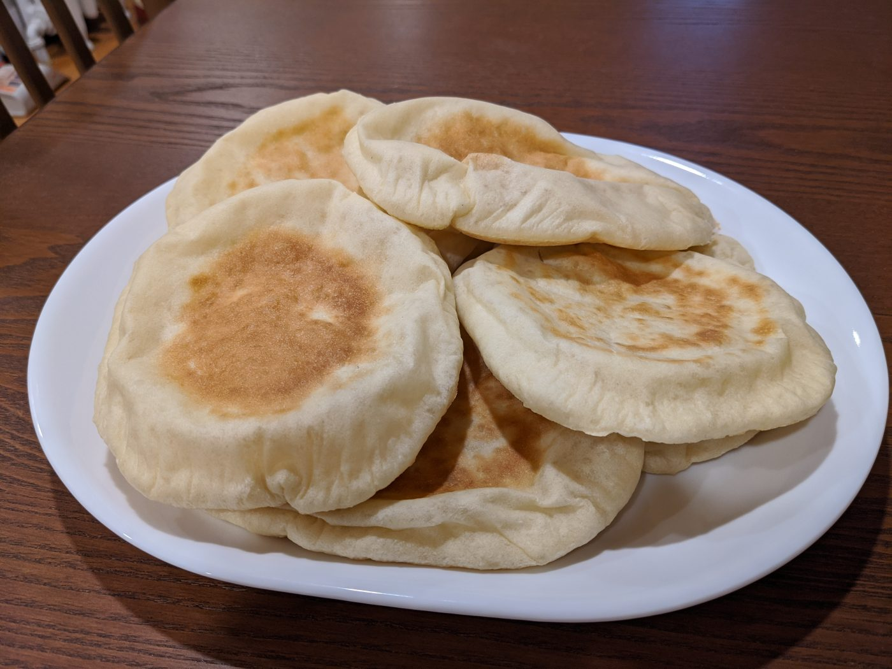
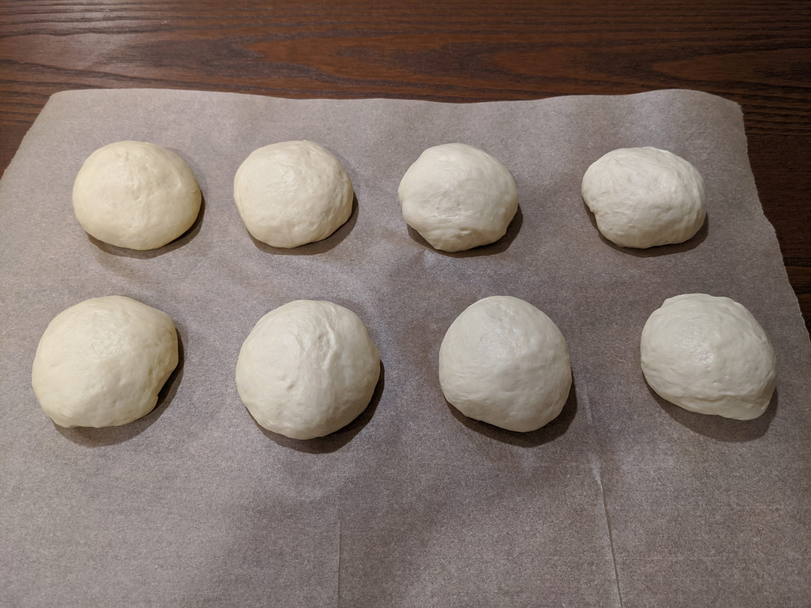
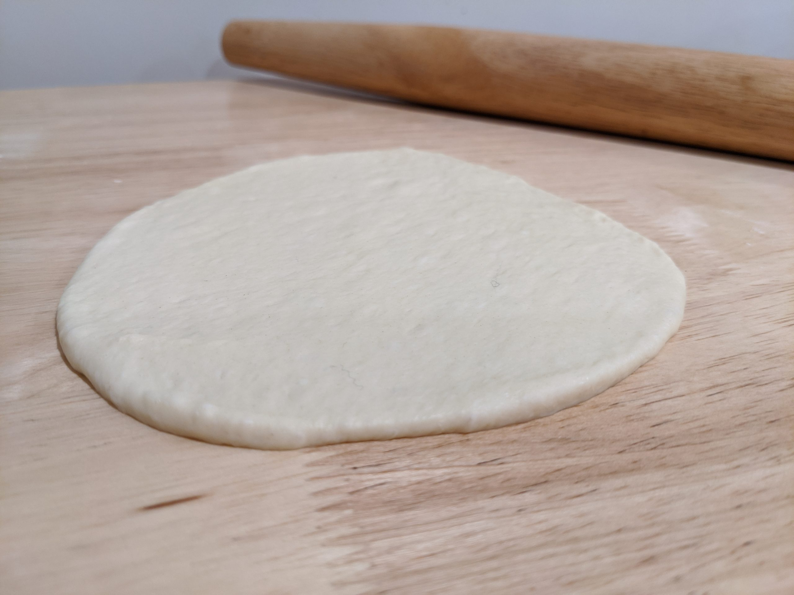
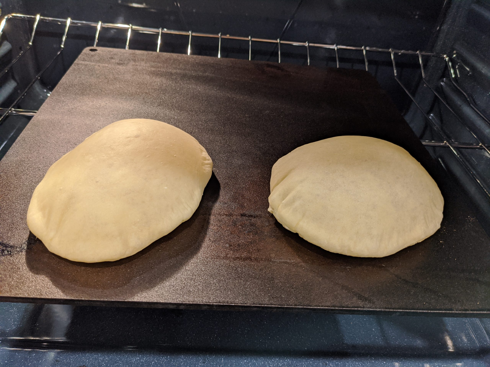

Pita Bread
- 
- 
- 
Ingredients
- 2 tsp active dry yeast
You can just use one standard packet - 1/2 tsp sugar
- 345 g unbleached all-purpose flour
- 1 tsp salt
- 2 tbsp olive oil
Instructions
- In a large bowl, combine the yeast and sugar with 1 cup of lukewarm water. Whisk to dissolve.
- Add in the whole-wheat flour and 30g of the all-purpose flour. Whisk to dissolve.
Let rest for 15 minutes.
Until frothy and bubbly
- Add the salt, olive oil, and 220g of flour, keeping the remaining 60g of flour in reserve.
- Stir until the mixture forms a shaggy mass. Dust with some of the reserved flour, then knead in the bowl for 1 minute.
- Turn the dough onto a work surface. Knead lightly for 2 minutes, let rest for 10 minutes, then knead again for 2 minutes. You want to use the minimum amount of your reserve flour. The dough school be soft, moist, and slightly tacky, while still being easy to handle.
- Clean and lightly grease your large mixing bowl. Put the dough back in, cover it tightly with plastic wrap
Let rise for 1 hour.
Until doubled in size
-
While the dough is rising, preheat your over to 475 degrees. For a cooking surface, use one of the following, ordered by preference: pizza steel, pizza stone, cast iron pan, or heavy baking sheet.
The idea is that we want something that will get very hot and retain a lot of heat.
-
Place your cooking surface of choice on the bottom rack of your oven to get it nice and hot. Especially for a pizza steel/stone (which can take a while to heat up), you want it in the oven for the full hour.
-
After your dough has risen, punch it down and divide into 8 equal pieces.
I recommend using a scale if you want nice, evenly-sized pitas. -
Roll each piece into a little ball and place them either on your work surface or a piece of parchment paper. Cover them with a damp towel.
Let rest for 10 minutes.
-
Depending on your cooking surface, you can probably only cook one or two pitas at a time. Even if your surface is quite large, it’s worth noting that they can be tricky to flip, so you’ll want to give yourself some extra room.
So, working either one or two at a time (leaving the rest covered), take the balls and flatten them into disks using a rolling pin. You should be shooting for around 8" in diameter and between 1/8" and 1/4" thickness.
You may need a little flour on your rolling pin to prevent sticking, but try not to put any on your work surface – the tackiness of the dough on the surface will make it much easier to roll them out thin.
-
Take your disks and place them directly on your cooking surface.
Rather than drop them flat (which can cause a lot of wrinkling), I recommend placing one edge down first and then lowering the rest down quickly and carefully. -
Let your pitas bake for 2 minutes one one side, at which point they will (hopefully) be nicely puffed. Then flip and bake for 1 more minute. The pitas should be largely pale with some brown spots. You don’t want any char.
-
After removing from the oven, place them on a wire rack to cool.
Rinse and repeat for the remaining dough balls.